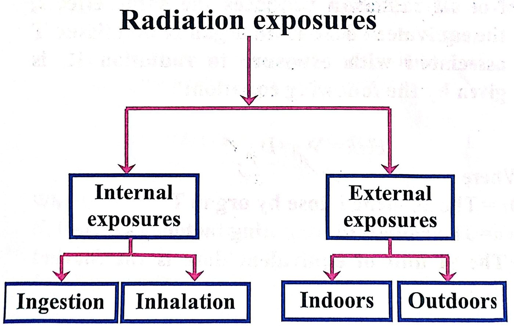

وحدات قياس الإشعاعRadiation Measurement Units & International SI Units
نظري · م02 · 3.3 دقيقةأقسام المحاضرة (8)
مقدمةIntroduction
Radiation protection requires the use of specific physical quantities to describe radioactive sources, radiation fields, energy transfer, and the biological effect of ionizing radiation on the human body.
تتطلب الوقاية من الإشعاع استعمال كميات فيزيائية محددة لوصف المصادر المشعة، والمجالات الإشعاعية، وانتقال الطاقة، والتأثير البيولوجي للإشعاع المؤيِّن في جسم الإنسان.
- 1. Activityالنشاط الإشعاعي.
- 2. Exposureالتعرض.
- 3. Absorbed Doseالجرعة الممتصة.
- 4. Equivalent Doseالجرعة المكافئة.
- 5. Effective Doseالجرعة الفعالة.
- 6. Committed Equivalent and effective Doseالجرعة المكافئة والفعالة الملتزَم بها.
- 7. Kermaالكيرما.
النشاط الإشعاعيActivity
المعادلة: A = λN
It is typically expressed in units (SI) such as Becquerels (Bq).
يُعبَّر عنه عادةً بوحدات النظام الدولي (SI)، مثل البيكريل Becquerel (Bq).
1 Bq = decay/second. That is: 1 Bq = one radioactive decay per second.
1 Bq = تحلّل واحد في الثانية، أي: 1 Bq = تحلّل إشعاعي واحد في الثانية.
This activity can be natural or human made and is important in various fields, including medicine, industry, and nuclear science.
يمكن أن يكون هذا النشاط طبيعياً أو من صنع الإنسان، وله أهمية في مجالات مختلفة، منها الطب والصناعة والعلوم النووية.
التعرضExposure
The photons interact many times with atoms in the air each of which creates a free electron. These secondary electrons can themselves produce ionization and additional electrons.
تتفاعل الفوتونات مرات عديدة مع ذرات الهواء، ويُنتج كل تفاعل منها إلكتروناً حراً. وهذه الإلكترونات الثانوية يمكنها هي نفسها أن تُحدث تأيُّناً وتُنتج إلكترونات إضافية.
Exposure measure the number of ionization in air.
يقيس التعرض مقدار التأيُّن في الهواء.
Traditional unit is Roentgen (R).
الوحدة التقليدية هي الرونتجن Roentgen (R).

الجرعة الممتصة (D)Absorbed Dose (D)
It is expressed in Gray (Gy).
يُعبَّر عنها بوحدة الغراي Gray (Gy).
1 Gray (Gy) represents the absorption of 1 joule of energy per kilogram of the material (1 Gy = 1 J/kg).
1 غراي يمثّل امتصاص 1 جول من الطاقة لكل كيلوغرام من المادة (1 Gy = 1 J/kg).
المعادلة: D = E / M
الجرعة المكافئة (H)Equivalent Dose (H)
Not all radiation produces the same effects, the equivalent dose to an organ H in a tissue T associated with exposure to radiation R, is given by the following equation:
ليس كل إشعاع يُحدث التأثيرات نفسها. والجرعة المكافئة لعضو H في نسيج T المرتبطة بالتعرض لإشعاع R تُعطى بالمعادلة الآتية:
H_T,R = W_R × D_T
The SI unit of equivalent dose is the Sievert (Sv).
وحدة الجرعة المكافئة في النظام الدولي هي السيفرت Sievert (Sv).
الجرعة الفعالة (E)Effective Dose (E)
Not all tissues have the same sensitivity to radiation.
ليست كل الأنسجة متساوية في حساسيتها للإشعاع.
The effective dose can therefore be expressed by the following equation: E = H_T × W_T (احتمال خطأ: الأصح: E = Σ W_T × H_T، أي مجموع كل الأعضاء)
لذلك يمكن التعبير عن الجرعة الفعالة بالمعادلة: E = H_T × W_T
The SI unit of effective dose is the Sievert (Sv).
وحدة الجرعة الفعالة في النظام الدولي هي السيفرت Sievert (Sv).
الجرعة المكافئة والفعالة الملتزَم بهاCommitted Equivalent and Effective Dose
H_T(τ) = ∫₀^τ Ḣ_T(t) dt
E(τ) = Σ W_T H_T(τ)
الكيرماKERMA
KERMA = Kinetic Energy Released / Mass
KERMA is defined as the sum of the initial kinetic energies of all charged particles liberated by ionizing radiation (e.g., X-rays, gamma rays, or other forms of ionizing radiation) per unit mass of the irradiated material.
تُعرَّف الكيرما بأنها مجموع الطاقات الحركية الابتدائية لكل الجسيمات المشحونة التي يحرّرها الإشعاع المؤيِّن (مثل الأشعة السينية أو أشعة غاما أو غيرها من أشكال الإشعاع المؤيِّن) لكل وحدة كتلة من المادة المشعَّع عليها.
المحاضرة مسموعة
نص الأستاذ بالإنكليزي مثل الأصل · 3.3 دقيقة. اضغط أي جملة تسمعها، أو مصطلح منقّط تسمع لفظه ومعناه.
Introductionمقدمة
Introduction
Radiation protection requires the use of specific physical quantities to describe radioactive sources, radiation fields, energy transfer, and the biological effect of ionizing radiation on the human body.
Activity
Exposure
Absorbed Dose
Equivalent Dose
Effective Dose
Committed Equivalent and effective Dose
Kerma
Activityالنشاط الإشعاعي
Activity
Activity is the measure of the rate at which radioactive materials decay and emit ionizing radiation.
It is typically expressed in units (SI) such as Becquerels (Bq).
1 Bq = decay/second. That is: 1 Bq = one radioactive decay per second.
This activity can be natural or human made and is important in various fields, including medicine, industry, and nuclear science.
Exposureالتعرض
Exposure
The photons interact many times with atoms in the air each of which creates a free electron. These secondary electrons can themselves produce ionization and additional electrons.
Exposure is the total electric charge on the ions produced in a given mass of air.
Exposure measure the number of ionization in air.
Traditional unit is Roentgen (R).
Absorbed Dose (D)الجرعة الممتصة (D)
Absorbed Dose (D)
Absorbed dose is the mean energy deposited by ionizing radiation to matter per unit mass.
It is expressed in Gray (Gy).
1 Gray (Gy) represents the absorption of 1 joule of energy per kilogram of the material (1 Gy = 1 J/kg).
Equivalent Dose (H)الجرعة المكافئة (H)
Equivalent Dose (H)
Not all radiation produces the same effects, the equivalent dose to an organ H in a tissue T associated with exposure to radiation R, is given by the following equation:
The SI unit of equivalent dose is the Sievert (Sv).
Effective Dose (E)الجرعة الفعالة (E)
Effective Dose (E)
Not all tissues have the same sensitivity to radiation.
The effective dose is the equivalent doses for each organ or tissue in the organism, multiplied by its tissue weighting factor (W_T)
The effective dose can therefore be expressed by the following equation: E = H_T × W_T (احتمال خطأ: الأصح: E = Σ W_T × H_T، أي مجموع كل الأعضاء)
The SI unit of effective dose is the Sievert (Sv).
Committed Equivalent and Effective Doseالجرعة المكافئة والفعالة الملتزَم بها
Committed Equivalent and Effective Dose
The committed equivalent dose is the total equivalent dose that will be received by a specific organ or tissue over a specified period of time following the intake of radioactive material.
The committed effective dose is the sum of the committed equivalent doses to all organs and tissues, each multiplied by its tissue weighting factor W_T.
KERMAالكيرما
KERMA
KERMA stands for: Kinetic Energy Released per unit Mass
KERMA is defined as the sum of the initial kinetic energies of all charged particles liberated by ionizing radiation (e.g., X-rays, gamma rays, or other forms of ionizing radiation) per unit mass of the irradiated material.
20 سؤال من نص المحاضرة، ويّا «ليش صح» بعد كل جواب.
ابدأ الاختباراضغط أي مصطلح منقّط تسمع لفظه ومعناه.
PDF ثنائي اللغة: نص الأستاذ + الترجمة + الخلاصة + الأسئلة · 0.7 MB
تحميل الملف